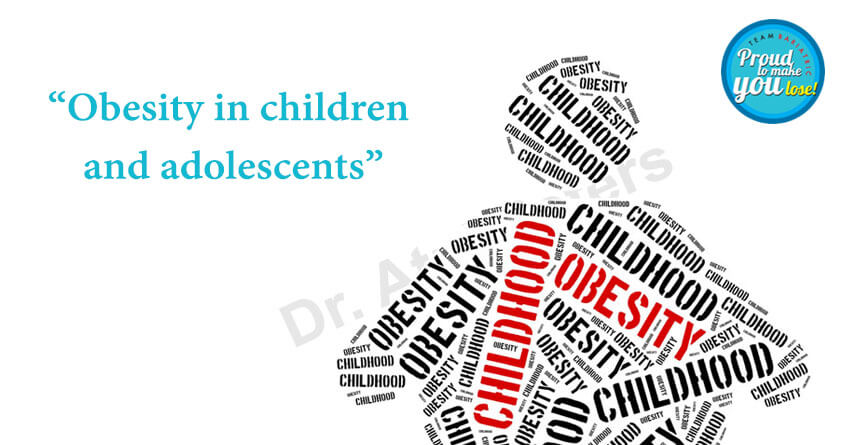

Combating Childhood Obesity During COVID-19: Tips for Keeping Kids Active and Healthy
Childhood obesity is a major risk factor for obesity in later life, which is associated with health problems such as heart disease and diabetes. Prolonged school closures due to COVID-19 could raise risk factors for weight gain in children. Parents need to know about the significance of keeping their children active to lessen risk factors for childhood obesity even with school closures and social distancing.Challenges in Managing Screen Time
During the pandemic, parents are finding it challenging to limit their children’s screen time and encourage physical activities — especially while balancing work, managing household chores, and supervising online school assignments. Closures of parks and public places have forced children to temporarily restraint from sports and other activities. Social distancing also reduces the chance for children to exercise and play outdoors. Another concern here is that increased screen time is connected with increased snacking. Families and children are dealing with increased boredom and anxiety, and these sentiments eventually relate to overeating.Benefits of Exercise During COVID-19
Regular exercise is vital for all, including children. Children will be more interested in exercise if the whole family participates, like yoga sessions at home, dancing together, walking the dog or family walks, etc. Many online services offer exercise videos, especially for children. Work with your child to set an age-appropriate exercise goal, to encourage them to keep moving. However, for the following reasons, exercise is particularly important for children during the COVID-19 pandemic:- Prevent weight gain - Exercise can help children burn calories and balance the effects of sedentary activities.
- Reduces anxiety - Exercise is a mood-booster and can help children reduce their stress levels and build emotional spirit.
- Boosts the immune system - Exercise has immune-boosting benefits that may help children and adults to fight off infections, including COVID-19.
Healthy Eating Tips for Families
Also, here are some healthy eating tips for your family.- Include fruits and vegetables in the diet - give children freshly-cut salads, and large batches of soups and stews. Take care to add foods rich in vitamin C like citrus fruits, and foods rich in zinc, like whole grains, baked beans, and nuts, to the diet. These foods can protect against viral infections.
- Avoid processed and artificially-preserved food - as they have high quantities of saturated fatty acids, sugars, and salt. Eating freshly home-cooked food will be hygienic for children, hence reducing the risk of infections. Adding milk and milk-based products like curd will help in maintaining good health, and food fortified with Vitamin D is useful.
- Build up a stock of healthy snacks - nuts, cheese, yoghurt (preferably unsweetened), chopped or dried fruits, boiled eggs, etc. Limit the amount of added sugar your child eats or drinks.
- Drink enough water - It is recommended to drink a maximum of eight glasses of water per day for children aged 9 and older.
Also Read: Benefits of Losing Weight